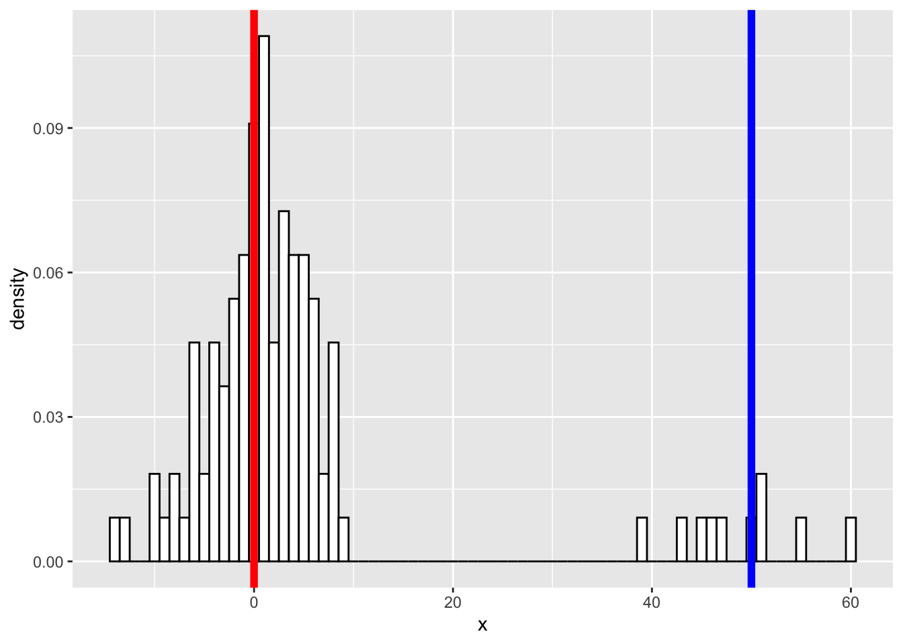

使用有限混合模型
王诗翔 · 2019-09-06
模拟数据
library(ggplot2)
library(flexmix)
#> 载入需要的程辑包：latticem1 <- 0
m2 <- 50
sd1 <- sd2 <- 5
N1 <- 100
N2 <- 10
a <- rnorm(n=N1, mean=m1, sd=sd1)
b <- rnorm(n=N2, mean=m2, sd=sd2)绘制数据图形
x <- c(a,b)
class <- c(rep('a', N1), rep('b', N2))
data <- data.frame(cbind(x=as.numeric(x), class=as.factor(class)))
library("ggplot2")
p <- ggplot(data, aes(x = x)) +
geom_histogram(aes(x, ..density..), binwidth = 1, colour = "black", fill = "white") +
geom_vline(xintercept = m1, col = "red", size = 2) +
geom_vline(xintercept = m2, col = "blue", size = 2)
p
拟合模型
这里我们可以看到应该是由2个分布混合而成，试着去恢复相应分布的参数：
set.seed(0)
mo1 <- FLXMRglm(family = "gaussian")
mo2 <- FLXMRglm(family = "gaussian")
flexfit <- flexmix(x ~ 1, data = data, k = 2, model = list(mo1, mo2))print(table(clusters(flexfit), data$class))
#>
#> 1 2
#> 1 0 10
#> 2 100 0区分效果很好（其实可以用这种方法去分类）。
查看结果
parameters(flexfit)
#> [[1]]
#> Comp.1 Comp.2
#> coef.(Intercept) 51.04 -1
#> sigma 4.82 5
#>
#> [[2]]
#> Comp.1 Comp.2
#> coef.(Intercept) 51.04 -1
#> sigma 4.82 5输出参数：
c1 <- parameters(flexfit, component=2)[[1]]
c2 <- parameters(flexfit, component=1)[[1]]
cat('pred:', c1[1], '\n')
#> pred: -1
cat('true:', m1, '\n\n')
#> true: 0
cat('pred:', c1[2], '\n')
#> pred: 5
cat('true:', sd1, '\n\n')
#> true: 5
cat('pred:', c2[1], '\n')
#> pred: 51
cat('true:', m2, '\n\n')
#> true: 50
cat('pred:', c2[2], '\n')
#> pred: 4.82
cat('true:', sd2, '\n\n')
#> true: 5基本能拟合出原始分布。
可视化拟合
plot_mix_comps <- function(x, mu, sigma, lam) {
lam * dnorm(x, mu, sigma)
}
lam <- table(clusters(flexfit))
ggplot(data) +
geom_histogram(aes(x, ..density..), binwidth = 1, colour = "black", fill = "white") +
stat_function(geom = "line", fun = plot_mix_comps,
args = list(c1[1], c1[2], lam[2]/sum(lam)),
colour = "red", lwd = 1.5) +
stat_function(geom = "line", fun = plot_mix_comps,
args = list(c2[1], c2[2], lam[1]/sum(lam)),
colour = "blue", lwd = 1.5) +
ylab("Density")
新的问题
能否自动推断出有2个分布以及它们的参数？？
flexfit = stepFlexmix(x ~ 1, data = data, k = 1:5, model = FLXMRglm(family = "gaussian"))
#> 1 : * * *
#> 2 : * * *
#> 3 : * * *
#> 4 : * * *
#> 5 : * * *flexfit
#>
#> Call:
#> stepFlexmix(x ~ 1, data = data, model = FLXMRglm(family = "gaussian"),
#> k = 1:5)
#>
#> iter converged k k0 logLik AIC BIC ICL
#> 1 2 TRUE 1 1 -459 923 928 928
#> 2 12 TRUE 2 2 -366 742 755 755
#> 3 55 TRUE 3 3 -366 747 769 864
#> 4 38 TRUE 4 4 -366 753 783 906
#> 5 200 FALSE 4 5 -365 753 783 915根据 BIC 选择一个最佳的模型：
fitBest = getModel(flexfit, which = "BIC")
str(fitBest, max.level = 2)
#> Formal class 'flexmix' [package "flexmix"] with 18 slots
#> ..@ posterior :List of 2
#> ..@ weights : NULL
#> ..@ iter : int 12
#> ..@ cluster : int [1:110] 1 1 1 1 1 1 1 1 1 1 ...
#> ..@ logLik : num -366
#> ..@ df : num 5
#> ..@ control :Formal class 'FLXcontrol' [package "flexmix"] with 6 slots
#> ..@ group : Factor w/ 0 levels:
#> ..@ size : Named int [1:2] 100 10
#> .. ..- attr(*, "names")= chr [1:2] "1" "2"
#> ..@ converged : logi TRUE
#> ..@ k0 : int 2
#> ..@ model :List of 1
#> ..@ prior : num [1:2] 0.9091 0.0909
#> ..@ components :List of 2
#> ..@ concomitant:Formal class 'FLXP' [package "flexmix"] with 7 slots
#> ..@ formula :Class 'formula' language x ~ 1
#> .. .. ..- attr(*, ".Environment")=<environment: R_GlobalEnv>
#> ..@ call : language stepFlexmix(x ~ 1, data = data, model = FLXMRglm(family = "gaussian"), k = 2)
#> ..@ k : int 2查看参数：
parameters(fitBest)
#> Comp.1 Comp.2
#> coef.(Intercept) -1 51.04
#> sigma 5 4.82这个我们的输入非常接近，但也存在一个不小的误差：
print(paste(m1, sd1))
#> [1] "0 5"
print(paste(m2, sd2))
#> [1] "50 5"使用不同的接口
Flexmix 这个包的文档看起来让人很蒙蔽，完全搞不懂核心的一些建模函数。我下面测试下不同的接口使用的效果。
set.seed(0)
fit1 <- flexmix(x ~ 1, data = data, k = 2, model = FLXMRglm(family = "gaussian"))
parameters(fit1)
#> Comp.1 Comp.2
#> coef.(Intercept) 51.04 -1
#> sigma 4.82 5fit2 <- flexmix(x ~ 1, data = data, k = 2, model = FLXMCnorm1())
parameters(fit2)
#> Comp.1 Comp.2
#> mean 51.04 -1
#> sd 5.06 5使用泊松分布来拟合试试，先生成泊松分布数据：
N1 <- 100
N2 <- 10
a <- rpois(N1, 0)
b <- rpois(N2, 50)
x <- c(a,b)
class <- c(rep('a', N1), rep('b', N2))
data <- data.frame(cbind(x=as.numeric(x), class=as.factor(class)))fit3 <- flexmix(x ~ 1, data = data, k = 2, model = FLXMCmvpois())
parameters(fit3)
#> Comp.1.lambda Comp.2.lambda
#> 48.3 0.0fit4 <- flexmix(x ~ 1, data = data, k = 2, model = FLXMRglm(family = "poisson"))
parameters(fit4)
#> Comp.1.coef.(Intercept) Comp.2.coef.(Intercept)
#> 3.88 -28.67FLXMCmvpois() 显示的是 demo driver，但却比 FLXMRglm(family = "poisson") 结果准确的多！！
不能理解这个包的哲学，尽管它看起来是那么的优秀~
更新：2019-09-17
发现 flexmix 提供的功能大体分为两类，以 FLXMC 开头的是做聚类的，而以 FLXMR 开头的是做回归的。
能否重复分析？
set.seed(1234)
fit <- flexmix(x ~ 1, data = data, k = 2, model = FLXMCmvpois())
parameters(fit)
#> Comp.1.lambda Comp.2.lambda
#> 48.3 0.0set.seed(1234)
fit <- flexmix(x ~ 1, data = data, k = 2, model = FLXMCmvpois())
parameters(fit)
#> Comp.1.lambda Comp.2.lambda
#> 48.3 0.0对于 step 方法？
set.seed(1234)
stepfit = stepFlexmix(x ~ 1, data = data, k = 1:5, model = FLXMCmvpois())
#> 1 : * * *
#> 2 : * * *
#> 3 : * * *
#> 4 : * * *
#> 5 : * * *
fit = getModel(flexfit, which = "BIC")
parameters(fit)
#> Comp.1 Comp.2
#> coef.(Intercept) -1 51.04
#> sigma 5 4.82set.seed(1234)
stepfit = stepFlexmix(x ~ 1, data = data, k = 1:5, model = FLXMCmvpois())
#> 1 : * * *
#> 2 : * * *
#> 3 : * * *
#> 4 : * * *
#> 5 : * * *
fit = getModel(flexfit, which = "BIC")
parameters(fit)
#> Comp.1 Comp.2
#> coef.(Intercept) -1 51.04
#> sigma 5 4.82结果显示一致
本文前半部分示例来自《A Practical Introduction To Finite Mixture Models》